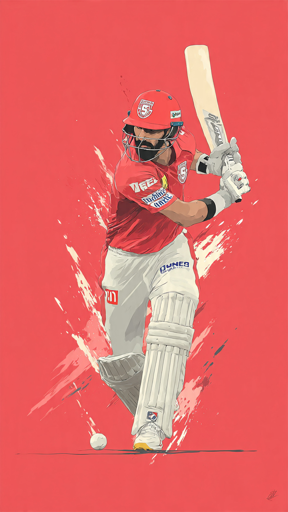

BCCI Reschedules Matches Due to Gujarat Elections

The Indian Premier League (IPL) 2026 has witnessed a significant schedule change that has caught the attention of cricket fans across the country. The Board of Control for Cricket in India (BCCI) recently announced that certain matches, including those involving Gujarat Titans and Chennai Super Kings, have been rescheduled. The reason behind this decision is the upcoming Gujarat local elections scheduled for April 26, 2026.
Elections in India are large-scale events that require extensive security arrangements, manpower, and administrative focus. Due to the Gujarat local elections, authorities need to deploy a significant number of police personnel and government staff. Hosting a high-profile IPL match simultaneously would create logistical challenges and security concerns.
The schedule change primarily impacts matches involving Gujarat Titans and Chennai Super Kings. These teams have a massive fan following, and their matches are among the most watched in the IPL. Rescheduling these games ensures that both the election process and the sporting event can proceed without disruption.
Players may need to adjust their training schedules and travel plans due to the revised fixtures. While professional cricketers are accustomed to changes, such adjustments can still affect preparation and performance. However, teams are expected to adapt quickly and maintain their competitive edge.
Fans who had planned to attend matches in Gujarat may need to revise their travel and accommodation plans. Ticket holders are advised to check official IPL platforms for updated match dates and ticket validity. Despite the inconvenience, most fans understand the importance of prioritizing national events like elections.
Organizing IPL matches involves coordination between multiple agencies, including stadium authorities, local administration, security forces, and broadcasters. When elections are scheduled, these resources are redirected, making it difficult to conduct matches smoothly. The BCCI’s decision reflects careful planning and coordination with local authorities.
This is not the first time elections have impacted sporting events in India. Major tournaments like the IPL often require rescheduling or relocation due to general or state elections. This highlights the scale and importance of elections in the country, where governance and public participation take precedence.
The BCCI plays a crucial role in ensuring that the IPL runs smoothly while respecting national priorities. By rescheduling matches, the board demonstrates its commitment to both the sport and the nation’s democratic process. The decision also avoids potential security risks and ensures a better experience for players and fans.
Such schedule changes may encourage organizers to plan future IPL seasons with election dates in mind. Advanced planning can minimize disruptions and ensure smoother execution. It also reflects the growing complexity of managing large-scale sporting events in a dynamic environment.
The IPL 2026 schedule change due to Gujarat elections is a reminder of how major national events can influence sports. While fans may face minor inconveniences, the decision ensures safety, proper administration, and respect for the democratic process. As the tournament continues, excitement remains high, and fans eagerly await the rescheduled matches.
Explore Cricket Gear